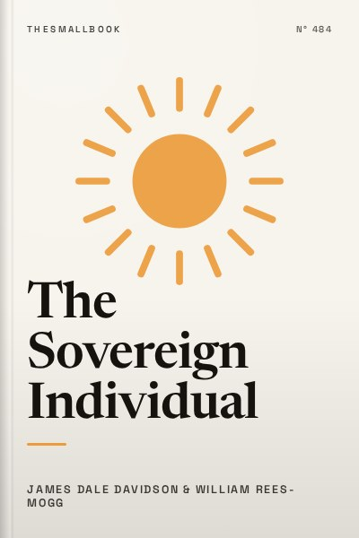

The Sovereign Individual
Mastering the transition to the information age economy.
READ FULL BREAKDOWN (FREE) →The Big Idea
Microprocessing and digital cryptography dismantle the industrial nation-state, liberating talent into borderless digital sovereignty.
Key Lessons
The Megapolitical Transition
Technology shifts dictate the scale of government. The digital shift favors the individual over mass bureaucracies.
The Demise of Geographic Monopolies
When commerce moves at the speed of light, governments must compete for citizens like businesses compete for customers.
Cyber-Commerce and Cyber-Money
Predictions made in 1997 of cryptographic private currencies operating without central banks have come true.
The Unbundling of Employment
Lifetime corporate tenure is dead. Top talent operates as sovereign free agents commanding market rates.
The Death of Mass Politics
Centralized political machines will struggle to collect taxes on intangible digital output.
The Rise of Micro-States
Small, nimble city-states will outperform sprawling, indebted continental empires in quality of life.
Protecting Digital Assets
In an era of state surveillance and data leaks, personal cryptographic hygiene is non-negotiable.
The Sovereign Mindset
Sovereignty is ultimately psychological: taking radical personal responsibility for your health, capital, and family.
The Graveyard Proves It
Where this advice breaks: Where this advice breaks: physical infrastructure, legal enforceability, and biological health remain tied to geographic territory.
Read the autopsy: lordstown-truck →